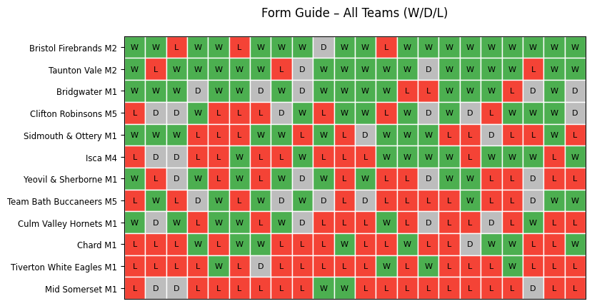
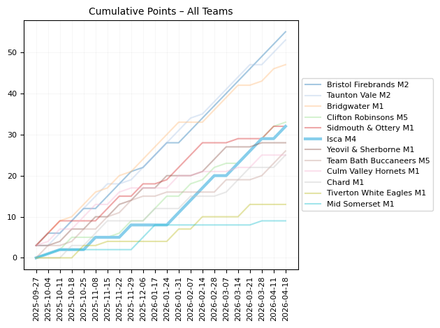
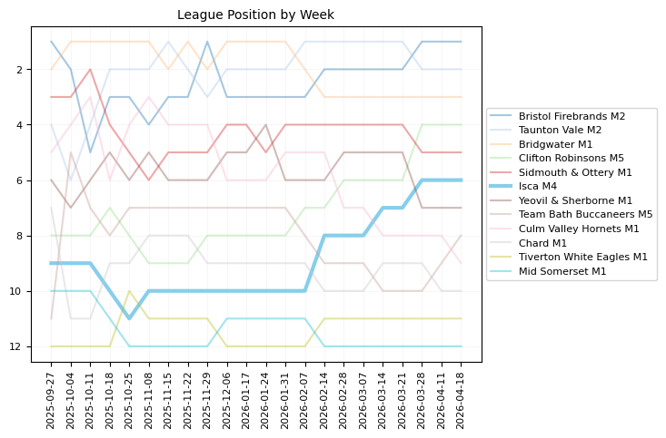
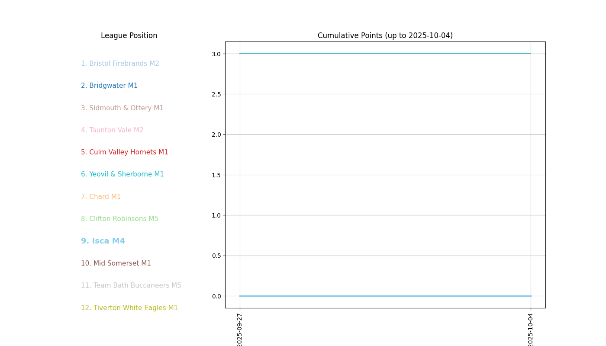

A Python scraper and analysis of the 2025/26 West Hockey Men's league season, following Isca M4 through 24 match days. Match results were pulled from the England Hockey fixtures API, turned into a cumulative league table, and visualised with matplotlib.

Every result for all twelve teams, week by week. Green is a win, grey a draw, red a loss — the whole season readable at a glance. Note ISCA's season of two halves!!

Points accumulating across the season, with Isca M4 picked out against the rest of the division.

The same season seen as table position rather than points. Isca M4 climbed from 9th at the turn of the year to finish 6th.

A bar chart race of the league table replaying the full campaign, generated with matplotlib's animation writer.